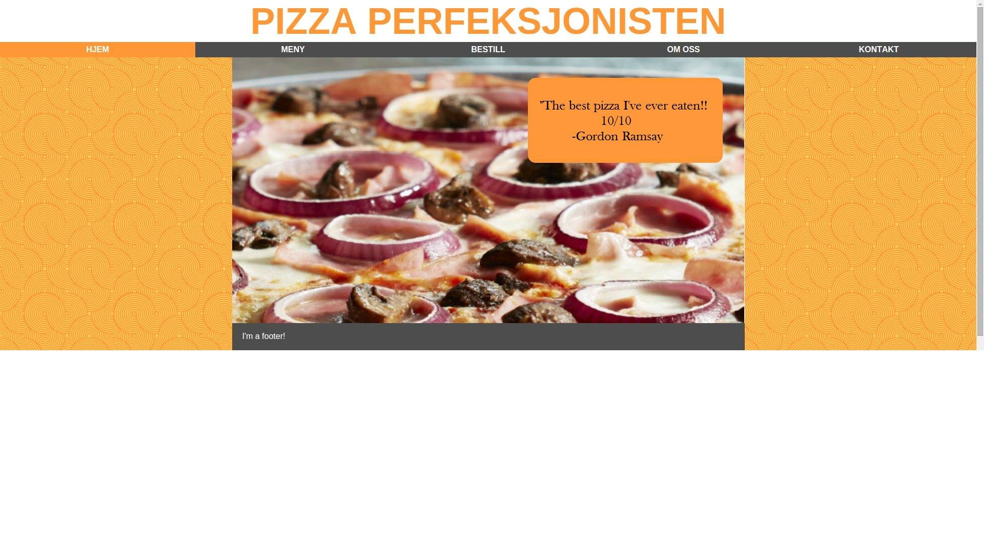

P2 Project Design
Eirik Rismyhr, Andreas Eikeland, Håvard Hellem, Andrers Larsen, Sivert Solum
Date: 07.10.15
Our client is the imaginary pizza makers "Pizza Perfeksjonisten". As such we do not have a specific contact person.
Pizza Perfeksjonisten's goals is to sell their great pizzas at great prices, and wish to reach out to the public through this webpage. They wish their webpage to have a clean, slick look with a user friendly design that makes the task of ordering a pizza sheer fun. The navigation should be simple and flawless, and all subsections should be found by ease. Through the site, Pizza Perfeksjonisten also wishes to advertise their take-away offer, where they deliver the pizza to your doorstep. The webpage should therefore contain an easy ordering system, where the user can complete the entire order using only their computer.
When deciding the navigation structure of the website we went with a structure where the user is able to access all other pages from any given page. This is done through the navigation bar at the top of the page with two roll-over menus. A graph of the navigation structure is shown below.
The reason we chose this structure was make the website as easy as possible to navigate and to make it easy for the user to find the different pages and subpages. Otherwise users might have trouble finding some of the subpages.
When coming up with the universal design, we focused on creating a welcoming and warm color scheme and layout. We want our web page to have a clean, slick look with a user-friendly design. Navigating the site should be easy, and all subpages will be located on the navigation bar in drop down menus. The design should make customers feel welcome, and will make the site easy to use for people of all ages. The ordering page will be simple and modern, and easy to find for all users.
This is the specific styling we will be use on all pages:
Homepage – home.html The homepage is the first page that will appear for the user. Thee homepage will feature ratings of the food made by different people, rated by stars from 1 – 10. The homepage will also feature pictures generated . Because we want to keep the homepage simplistic, we’ll only include the reviews and the picture of the pizza to make the user exited to try the food. The reviews will be centered in the body on top of the picture, and the picture will be centered in the body with a height 500 px width 1000px. The Picture will change every x seconds with JavaScript. (The font-family used for all text in the webpage will be Helvetica with a font-size of )
Menu – menu.html The menu will include three boxes that link specificaly to three new subpages: Classic pizzas, Special pizzas and Allergy list. The boxes will feature this text, along with a picture of a pizza from each class, or a table for the allegy page. The boxes will be centered in the body one by one, with a height of 150 px and a width of 300px. They will link with a href in the img tag.
Classic Pizza – classic_pizza.html The classic pizza page will include all of the simple pizzas sold by Pizza Perfeksjonisten, with pictures and ingredients specific for the different pizzas. The ‘’pepperoni pizza’’ for example will include a picture of the pizza, along with the description: ingredients: cheese, tomato sauce, pepperoni. The images will have a height and width of 100 px, with the title over the picture and the ingredients underneath. There will also be a link to the allergy page from this page, in the same style as in the menu page.
Special Pizza – special_pizza.html The special pizza page will include all of the more complex pizzas sold by Pizza Perfeksjonisten, with pictures and ingredients specific for the different pizzas. The ‘’pefect pizza’’ for example will include a picture of the pizza, along with the description: ingredients: cheese, tomato sauce, pepperoni, ham, bacon, beef, chicken, onions, peppers. The images will have a height and width of 100 px, with the title over the picture and the ingredients underneath. There will also be a link to the allergy page from this page, in the same style as in the menu page.
Allergy List – allergy_list.html This page will include a html table with all of the common allergy ingrediens, such as gluten, lactose, sulfits, eggs and so on. The table will be centered in the body, with a X in the table to mark which pizzas has which allergies. It will be black and white, with ingredients horisontally and food items vertically.
Ordering – ordering.html The ordering page will include a form that will input the name, address and the phone number of the client. They will also choose one or more pizzas, dressings and sodas of their choice. We will also underline that Pizza Perfeksjonisten is imaginary, so the orders will not actualy be registered. We will on the other hand include an address in the code, so that the orders will be saved as a textfile in the servers. The forms will be written in the html code, and centered in the body. It will consist of text inputs, dropdown lists, multiple select boxes and will be sent using the post method.
About Us – about_us.html The about us subpage will include the backstory of the wonderful company, Pizza Perfeksjonisten. This section will mosty include text, with history and other facts, and also a group photo of the employes (the creators of the webpage).
Restaurant – restaurant.html This subpage will feature some practical information about the restaurant, with a table and seat count, and pictures from inside the restaurant. The pictures will be centered in the body of the webpage, and generated by JavaScript.
Contact Information – contact.html This subpage will include the contact information for the company. Address information, names and phone numbers will all be presented, along with a Google Maps position of the restaurant. (this will be linked to a random location somewhere in Trondheim)
How we plan to fulfill the minimum requirement for javascript:
We are planning to include the four following scripts in our project.
This is the oranization scheme we are going to follow when we make and store our files, and a table showing who makes what and when the deadlines are.
All following files will be put in the folder “PizzaPerfeksjonisten”, which we’ll create when the coding of the project begins.
List of files and folders:
Work Division and Deadlines:
| Filename | Description | In charge | Deadline |
|---|---|---|---|
| Home.html | The homepage | Anders(with navbar and footer completion) | 23.10.15 |
| Menu.html | The menu of the different pizza categories and allergy list | Anders | 23.10.15 |
| Classic_pizza.html | The menu of classic pizzas | Håvard | 23.10.15 |
| Special_pizza.html | The menu of special pizzas | Håvard | 23.10.15 |
| Allergy_list.html | The list of allergies | Sivert | 23.10.15 |
| Ordering.html | The page where customers can order pizza | Andreas + floating order bar thingy | 23.10.15 |
| Restaurant.html | Information about the restaurant | Sivert | 23.10.15 |
| About_us.html | Background history about Pizzaperfeksjonisten | Sivert | 23.10.15 |
| Contact.html | Contact information w/ google maps location | Eirik | 23.10.15 |
| Slideshow.jsSlidehow2.js | The JavaScript that generates random images of pizzas on the homepage, and the restaurant page | Sivert | 02.11.15 |
| menuRollOver.js | The JacaScript for a roll over for the navbar | Eirik | 02.11.15 |
| menuAnimation.js | The JS for animation when hoovering menu items | Håvard | 02.11.15 |
| fixedNavbar.js | The Javascript that scrolls the navbar with the page | Anders | 02.11.15 |
| formSubmittion.js | The JS that sends the order information to us | Andreas | 02.11.15 |
| Style.css | The CSS for all the styling for the webpage | All | 02.11.15 |
| Final control | Double checking everything to make sure nothing is broken | All | 13.11.15 |